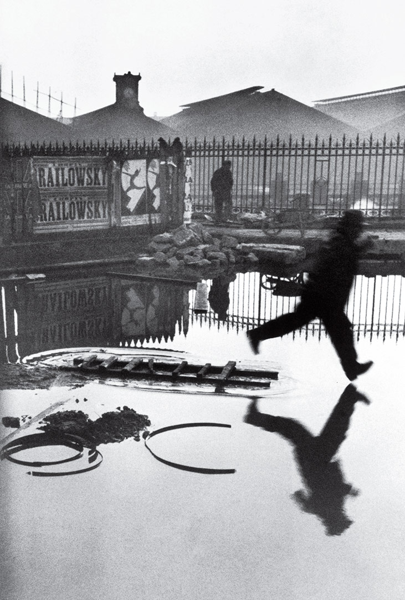
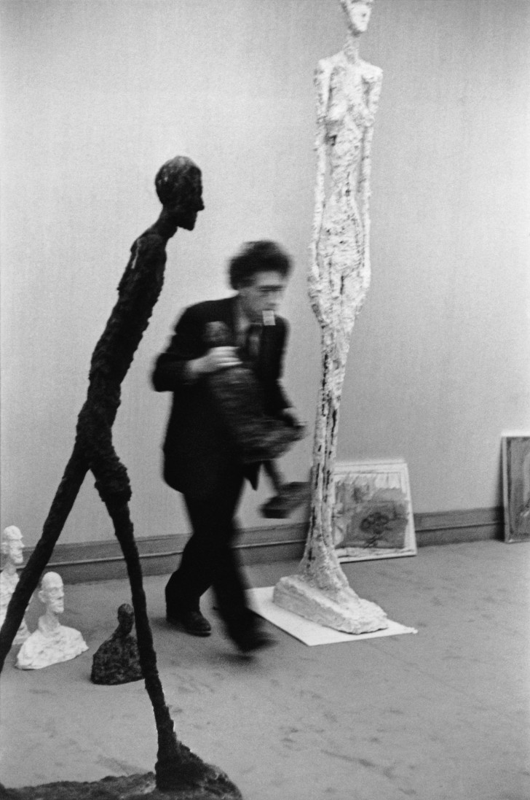
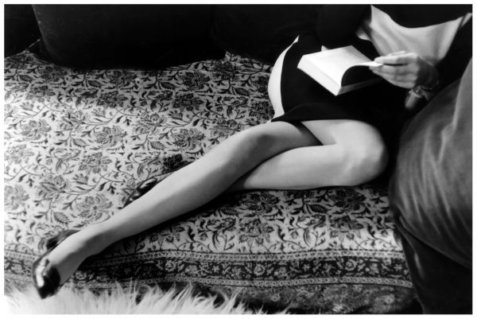

亨利·卡蒂尔-布列松 Henri Cartier-Bresson – 决定性瞬间 The decisive moment
文章目录
 图1. Place de l’Europe Gare Saint Lazare (1932)
布列松用犀利的洞察力、一部徕卡黑白相机捕捉了无数带着记忆温度的瞬间，他曾经说拍照的方法就是保持头脑、双眼和内心的一致，而且这才是生活的方法。
To take a photograph is to align the head, the eye and the heart. It’s a way of life.” -Henri Cartier-Bresson
《决定性瞬间》（The Decisive Moment）是Bresson中对自己摄影风格的详细讲解，被很多摄影师奉为摄影圣经。 Bresson相信：“There is nothing in this world that does not have a decisive moment”。 John Suler在摄影心理学中有一个章节总结了此书的关键观点[1]。
静静欣赏他的几幅经典作品[2]，慢慢体会他所说的决定性瞬间的精神。
Saint-Lazare火车站（图1），明亮的水面下倒映着一动一静的人影。 一位先生跳跃奔跑，完全不顾将踩入一片积水，也许是去赶火车见他的心上人；另一位先生和他的自行车安静在路边，像是在等远方归来的孩子。 此外，水波的涟漪、地上散落的铁圈与墙上宣传画里人物表达了曲线，远处火车站的棚顶、钟楼与铁路上天线的掠影，还有铁栅栏是横横竖竖的直线。 而我，都不关心。我只祈祷，让他赶上火车，让他快点等到亲人。
好友Alberto Giacometti的工作室（图2），看到好友穿梭在自己的雕塑作品中间，好友和好友的作品都成为了Bresson的作品，很有意思！ 也许Alberto正在着急摆放完雕塑然后一起去餐厅，Bresson正悠闲把玩相机，顺便随手一拍。
 图2. Alberto Giacometti, Maeght Gallery, Paris (1961)
 图3. Martine Franck, Martine’s Legs, Collection Eric et Louise Franck, Paris (1967)
他的作品里有日常生活 、有战火纷飞、有楼宇府第，也有断壁残垣；他用黑、白两色表现动、静元素，作品的魔力不仅仅是他自己所叙述的决定性瞬间，还能从中解读出“一千个哈姆雷特”： 不同的观众、不同的心情、不同的年代，对同一个作品都能有不同的品味。
现在的摄影器材种类越来越高大上，色彩、像素、构图等等技巧层出不穷，可是不断堆砌的元素表达的不确定性和艺术感越来越弱，留下的只是相片而已。
参考： [1] John Suler’s Photographic Psychology: Image and Psyche, http://truecenterpublishing.com/photopsy/decisive_moment.htm [2] Important Art by Henri Cartier-Bresson, https://www.theartstory.org/artist-cartier-bresson-henri-artworks.htm#pnt_5 [3] Henri Cartier-Bresson, https://pro.magnumphotos.com/C.aspx?VP3=CMS3&VF=MAGO31_9_VForm&ERID=24KL53ZMYN